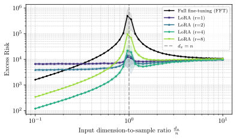
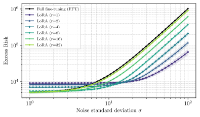
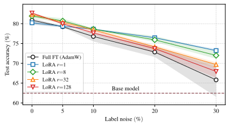
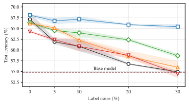
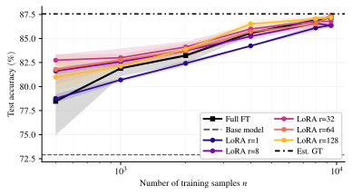
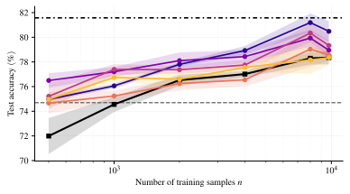
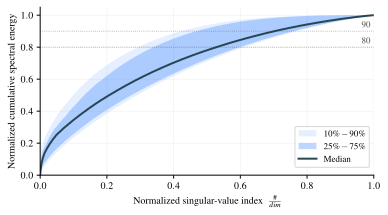
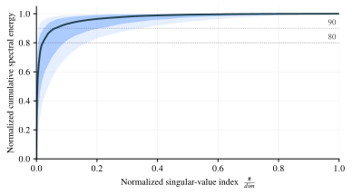

1Problem setup
Linear regression with $n$ i.i.d. samples $\mathcal{D}=\{(\x_i,\y_i)\}_{i=1}^n$:
Stacking samples as columns gives the data matrices:
Both methods solve $\min_{\A}\|\A\X-\Y\|_{\rm F}^{2}$. They differ only in the constraint on $\A$, and we always pick the min-norm solution.
FFT (min-norm)
LoRA (rank-$r$, Sondermann)
LoRA's update is the FFT update projected onto its top-$r$ singular components in the data geometry, then mapped back. Both estimators have closed form; we study their expected excess risk.
2Overdetermined regime $\;n \ge d_x$
When $n\!\ge\!d_x$, FFT coincides with OLS: it does not depend on $\A_0$ and is unbiased. The bound scales as $\Omega(d_x d_y/n)$ and blows up at the interpolation threshold $n\!\to\!d_x$.
If $\x_i \sim \mathcal{N}(\mathbf{0}, \Sxx)$ i.i.d. and $\See \succeq \mathbf{0}$:
$$\E\bigl[\Rc(\Afft)\bigr] - \Rc(\Astar) \,=\, \Tr(\See)\,\dfrac{d_x}{n-d_x-1}.$$The first term is LoRA's variance. The remaining two terms are the bias incurred by the rank-$r$ truncation: this error is inevitable, since any rank-$r$ adaptation must misfit the spectral tail of $\Dstar$ (terms involving $\sigma_{r+1}(\Dstar)$ and $\sum_{i>r}\sigma_{i}^{2}(\Dstar)$). The bias is small exactly when $\Dstar$ has rapidly decaying singular values.
Under the Gaussian setting of Prop. 3, the variance term in Thm. 2 is asymptotically equivalent to
$$r\max\{d_x,d_y\}\bigl(\sqrt{n}-\sqrt{d_x}\bigr)^{-2}\lmax(\See).$$Far from the interpolation threshold ($n\!\gg\!d_x$), with bounded $\lmax(\See)$ but non-vanishing $\bar\sigma_{\eps}^{2}$ (e.g. isotropic noise), this is $\mathcal{O}(r\max\{d_x,d_y\}/n)$, versus FFT's $\Omega(d_x d_y/n)$. Since $r$ is typically much smaller than $\min\{d_x,d_y\}$, LoRA achieves a substantial reduction in variance.
If $\mathrm{rank}(\Dstar)\le r$:
$$\begin{aligned} &\E\bigl[\Rc(\Alora)\bigr] - \Rc(\Astar) \;\lesssim\; \\[1pt] &\qquad\qquad \dfrac{r\max\{d_x,d_y\}}{n}\,\lmax(\See)\,\E\!\bigl[\lmax(\Sxx\Sxxh^{-1})\bigr]. \end{aligned}$$Bias-variance tradeoff. As $r$ grows, the truncation bias decreases but the variance grows linearly in $r$. When the spectrum of $\Dstar$ decays fast, even a small $r$ pays a tiny bias and reaps the full variance reduction. When the spectrum is flat, no $r\!<\!\min\{d_x,d_y\}$ can compete with FFT. In modern LLMs the spectrum is heavily concentrated in a few leading directions, making the low-rank assumption mild.
3Underdetermined regime $\;n < d_x$
FFT is now biased: the data only constrain $\A$ in the row space of $\X$, and the rest of $\Dstar$ leaks into the risk. Bias decreases linearly with $n$, while variance grows with $n$; they balance near $n\!\to\!d_x$.
The first term is the same bias as FFT (Thm. 3). The last two are truncation error from the rank-$r$ constraint, which vanish if $\mathrm{rank}(\Dstar)\!\le\!r$.
Assume $d_x > n+1$, $\x_i \sim \mathcal{N}(\mathbf{0}, \sigma_x^{2}\mathbf{I})$ i.i.d., and $\See\succeq\mathbf{0}$. The variance term in Thm. 4 is asymptotically equivalent to
$$r\max\{n,d_y\}\bigl(\sqrt{d_x}-\sqrt{n}\bigr)^{-2}\lmax(\See).$$If $\mathrm{rank}(\Dstar)\le r\lt n$:
$$\begin{aligned} &\E\bigl[\Rc(\Alora)\bigr] - \Rc(\Astar) \;\lesssim\; \E\!\bigl[\|\Dstar\Pxp\Sxx^{1/2}\|_{\rm F}^{2}\bigr] \\ &\quad +\, \dfrac{r\max\{n,d_y\}}{n}\,\lmax(\See)\,\E\!\bigl[\lmax(\Sxx\Sxxh^{\dagger})\bigr]. \end{aligned}$$4Linear regression experiment
Isotropic Gaussian features; $\Dstar = \tfrac{1}{\sqrt{r^\star}}\,\mathbf{U}\mathbf{V}$ with Gaussian $\mathbf{U},\mathbf{V}$. 100 seeds; shaded $\pm 1$ s.d.


- $r\ge r^\star$: LoRA beats FFT at every $d_x/n$; the optimum is $r=r^\star$.
- $r\lt r^\star$: rank-bias dominates and LoRA can hurt; risk is nearly flat in $d_x/n$.
- High noise: FFT explodes with $\sigma$; low-rank LoRA stays bounded.
- Interpolation peak at $d_x/n\!=\!1$ matches the $\sqrt{n}\!-\!\sqrt{d_x}$ scaling of Props. 4 and 6.
5LLM experiment: label noise
Qwen2.5-0.5B fine-tuned with various ranks on BoolQ & CommonsenseQA; 3 seeds. The noise level controls the variance term in our excess-risk bounds: larger $\Tr(\See)$ means the variance gap between FFT and LoRA dominates.


- Weak noise. No consistent rank ordering: a moderate $r$ is optimal, the classical bias/variance tradeoff.
- Strong noise. Test accuracy decreases monotonically with $r$. Restricting the number of trainable directions improves generalization.
- Why? Variance dominates the excess risk and LoRA scales it down by $r/\min\{d_x,d_y\}$ exactly as Cor. 1 predicts.
Two regimes (theory). When $\Tr(\See)\!\gg\!\|\Dstar\|_{\rm F}^{2}$ the variance term dominates the bias and adding samples can hurt. When $\Tr(\See)\!\ll\!\|\Dstar\|_{\rm F}^{2}$ the bias governs the risk. The plots above span both regimes.
6LLM experiment: sample size & spectrum
Qwen2.5-1.5B with various LoRA ranks across training-set sizes. Lower panels: normalized cumulative spectral energy of the estimated $\Dstar$.




- CommonsenseQA. Rapid spectral decay, so $\Dstar$ is effectively low-rank, and LoRA significantly outperforms FFT.
- BoolQ. Heavy spectral tail, so $\Dstar$ is poorly approximated by rank $r$, and LoRA matches FFT but does not beat it.
- Spectral decay = practical knob. The cumulative-energy curve of an estimated $\Dstar$ is a cheap diagnostic for when LoRA will help.
- Confirmation across model sizes. The qualitative trends in Figs. 2 and 3 reproduce on Qwen2.5-0.5B / 1.5B / 3B (App. VI), supporting the linear theory.
★Takeaways
- First excess-risk analysis of LoRA covering both over- and under-determined regimes.
- FFT $\Theta(d_x d_y/n)$ vs. LoRA $\mathcal{O}(r\max\{d_x,d_y\}/n)$: variance reduced by $r/\min\{d_x,d_y\}$.
- LoRA strictly outperforms FFT when $\Dstar$ is effectively low-rank; gap grows in high-noise / few-sample regimes.
- Qwen2.5 experiments match the linear theory: label noise & spectral decay decide the winner.